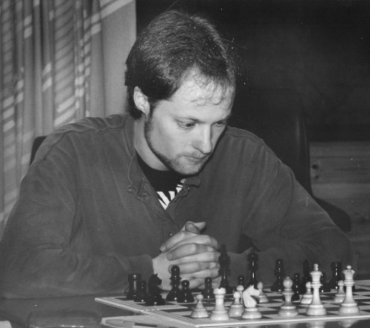

Den visjonære verdensmesteren: Jakten på det perfekte trekk tar tid

Ivar Bern fra Bergen stod for en av de største prestasjonene i norsk postsjakks historie da han ble verdensmester i 2006, 39 år gammel. Han er fortsatt den eneste nordmannen som har vunnet verdensmesterskapet i korrespondansesjakk.
Veien til VM-gullet var lang. Arbeidet startet i semifinalen 1989–1995, fortsatte gjennom kandidatturneringen og endte i den 17. VM-finalen som startet i mars 2002. Først i januar 2006 var tittelen sikret, mens turneringen formelt ble avsluttet i august 2007.
Bern var på forhånd bare rangert som nummer 62 på ICCFs ratingliste. Likevel gikk han ubeseiret gjennom finalen, med fem seire og elleve remiser. Seieren kom på kvalitetspoeng foran de tyske spillerne Wolfgang Rohde og Joachim Neumann.
Postsjakk på denne tiden ble fortsatt spilt per post. Et parti kunne strekke seg over flere år, og typisk hadde spillerne 30 dager på ti trekk. Verdensmesterskapet strakte seg over mer enn fire år.
«Jeg har spilt postsjakk i 20 år, men denne turneringen ble noe mye mer, egentlig en form for ekstremsport – sjakk både natt og dag med analyser om dagen og sjakkmaskinen i full sving hele døgnet.»
Bern var blant de første som virkelig utnyttet samspillet mellom menneskelig forståelse og moderne sjakkprogrammer. Han betraktet datamaskinen som et hjelpemiddel, ikke som en erstatning for egen vurdering.
Målet var å finne de beste trekkene og de beste partiene. For Bern var det en jakt på sjakklig perfeksjonisme.
Ifølge Bern er datamaskinen spesielt nyttig til å oppdage tabber og analysere kompliserte stillinger på stor dybde. Samtidig understreker han at maskinen ikke alltid forstår alle strategiske ideer umiddelbart.
Han beskrev Fritz som et verktøy som kunne regne raskt og dypt, men som fortsatt måtte brukes med menneskelig innsikt og sunn fornuft.
«Maskinen er for meg et hjelpemiddel som regner raskt og dypt. Men vi kan ikke stole på den fullt og helt. Den må brukes med fornuft.»
Etter VM-seieren beskrev Bern selv arbeidet som et livsprosjekt. Han brukte utallige timer ved sjakkbrettet og foran datamaskinen. På det mest intense arbeidet han gjennomsnittlig rundt ti timer daglig med VM-partiene.
På et tidspunkt hadde han 63 pågående partier samtidig. Han kombinerte analyser, sjakkbøker, åpningsteori og dataprogrammer i arbeidet mot verdensmestertittelen.
Bern mente at kombinasjonen av moderne sjakkprogrammer og menneskelig forståelse åpnet for analyser med en dybde som tidligere generasjoner av sjakkspillere aldri hadde hatt tilgang til.
VM-tittelen i 2006 står som en milepæl i norsk sjakkhistorie. Prestasjonen viser hva som kan oppnås gjennom langsiktig forberedelse, analytisk nøyaktighet og en kompromissløs søken etter det beste trekket.
Han mottok både hederstegn fra Norges Postsjakkforbund og stor oppmerksomhet i media. Fortsatt er han den eneste nordmannen som har oppnådd verdensmestertittelen i korrespondansesjakk.
Ivar Berns VM-tittel i 2006 ble bygget på et imponerende repertoar av korrespondansepartier preget av grundig analyse, strategisk forståelse og høy teknisk kvalitet. Partiene gir et interessant innblikk i hvordan en verdensmester arbeidet ved brettet og hvordan moderne korrespondansesjakk utviklet seg i overgangen til datamaskinstøttet analyse.
En samling av Ivar Berns partier kan studeres her: